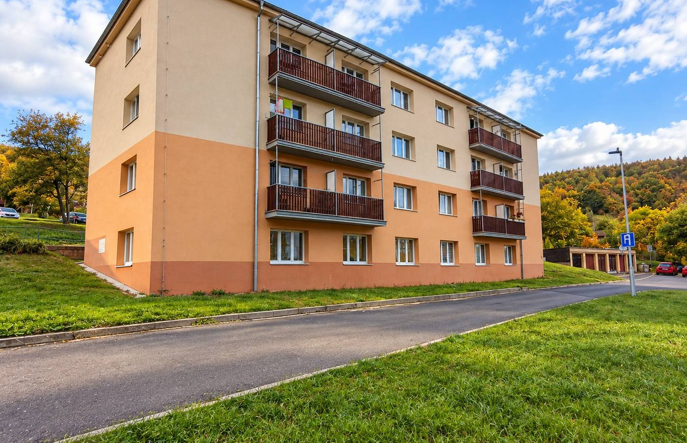
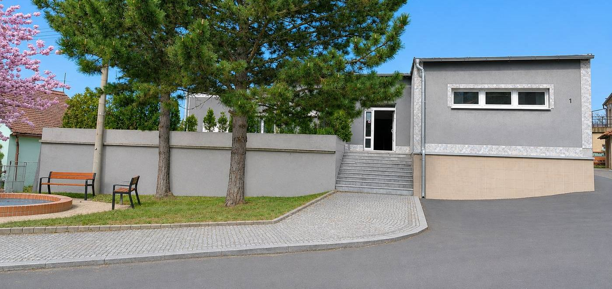
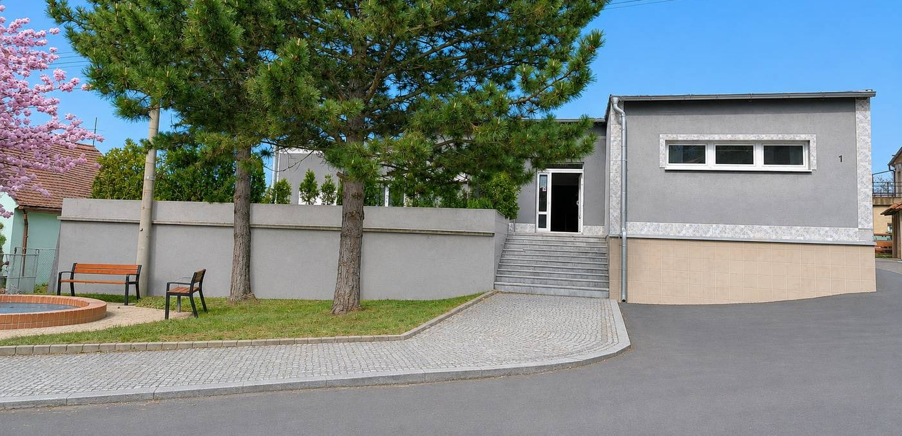
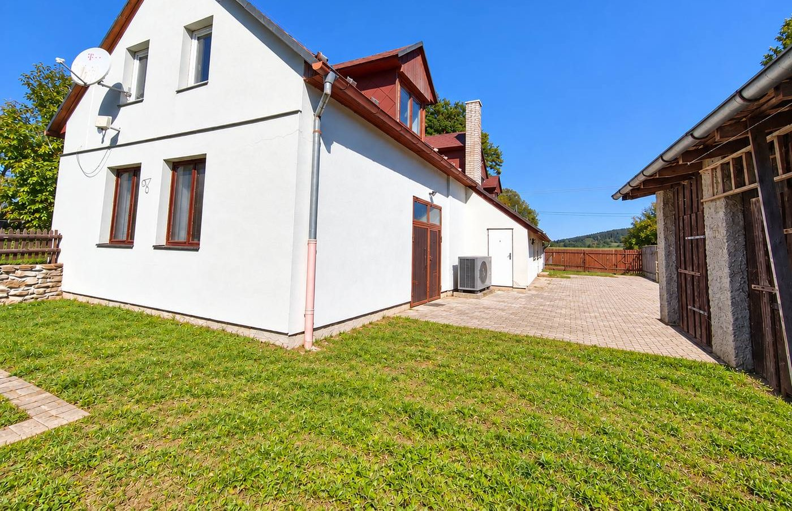
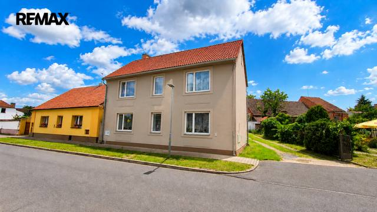
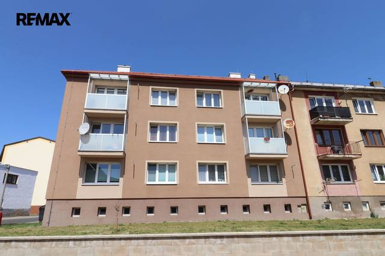
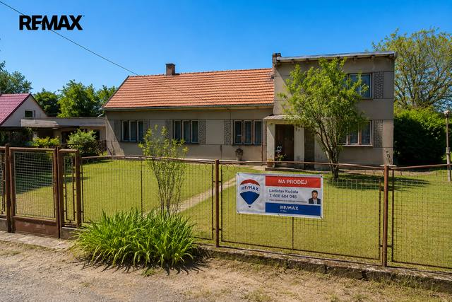
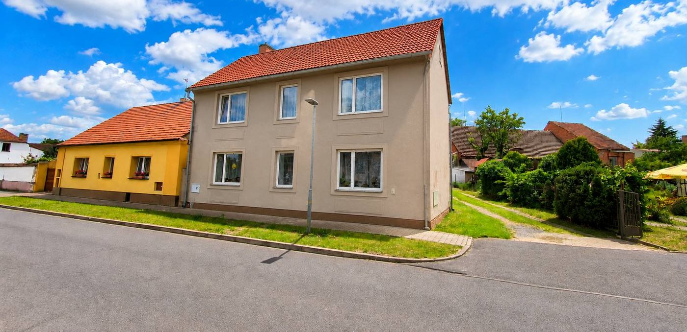

Aktuální nabídka
25 nemovitostí, především rodinné domy, byty. Každá má vlastní stránku s fotkami, popisem a mapou.
Prohlédnout nabídku

Ladislav Kučala · Realitní makléř · REMAX 4 You
Jmenuji se Ladislav Kučala, jsem realitní makléř kanceláře REMAX 4 You. Prodej, pronájem a odhad ceny nemovitostí v Severočeském, Západočeském a Středočeském kraji a v Praze.
Jmenuji se Ladislav Kučala. Jsem realitní makléř kanceláře REMAX 4 You a působím především v Severočeském, Západočeském a Středočeském kraji a v Praze.

25 nemovitostí, především rodinné domy, byty. Každá má vlastní stránku s fotkami, popisem a mapou.
Prohlédnout nabídku
Severočeský kraj, Západočeský kraj, Středočeský kraj a Praha.
Nemovitosti v lokalitě
Odhad tržní ceny nemovitosti, příprava prezentace, prohlídky, smlouvy a předání. Vy podepisujete, já zařizuji.
Domluvit schůzku Prodej · Byt
2 930 000 KčProdej bytu 3+1 v osobním vlastnictví 57 m², Meziboří
Meziboří
3+157 m²1. podlaží
Prodej · Byt
2 930 000 KčProdej bytu 3+1 v osobním vlastnictví 57 m², Meziboří
Meziboří
3+157 m²1. podlaží
 ProdejVideo
12 888 000 KčProdej obchodních prostor, Skršín
Skršín
524 m²
ProdejVideo
12 888 000 KčProdej obchodních prostor, Skršín
Skršín
524 m²
 Prodej · Dům
5 750 000 KčProdej domu 235 m², Toužim
Bezděkov, Toužim
235 m²
Prodej · Dům
5 750 000 KčProdej domu 235 m², Toužim
Bezděkov, Toužim
235 m²

Prodej · Dům 3 700 000 KčProdej domu 140 m², Vroutek Vroutek 140 m²
Prodej · BytVideo 3 180 000 KčProdej bytu 3+1 v osobním vlastnictví 63 m², Kryry Kryry 3+163 m²3. podlaží
Prodej · Dům 3 200 000 KčProdej domu 85 m², Vroutek Vroutek 85 m²Tomuto výběru zatím neodpovídá žádná nabídka. Napište mi, co hledáte.
Každý špendlík je jedna nemovitost z mé nabídky. Klikněte a podívejte se.
© přispěvatelé OpenStreetMap

Vyplňte krátký formulář a do 24 hodin Vám pošlu nezávazný odhad ceny. Zdarma.
Na co se ptáte nejčastěji, než se potkáme.
Odhad nemovitosti se liší podle účelu: jinak se zpracovává odhad pro dědické řízení a jinak odhad tržní ceny nemovitosti pro prodej. Cena je proto individuální, řeknu Vám ji předem podle konkrétní nemovitosti.
Nejdřív prohlídka a odhad ceny, pak příprava prezentace (fotografie, popis, inzerce), prohlídky se zájemci, rezervační smlouva, kupní smlouva s advokátní úschovou a předání nemovitosti. O každém kroku víte předem.
Nejrychleji přes WhatsApp nebo telefon. Odpovídám i večer a o víkendu, protože prohlídky se domlouvají hlavně mimo pracovní dobu.